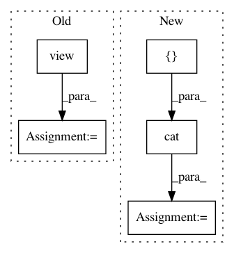

f93beff338925cc1bf1b3ff1b32a2c440a4c9427,tests/_tests_scripts/z_mvp_mnist_gan.py,CustomRunner,_handle_batch,#CustomRunner#Any#,18
Before Change
Docs.
images, _ = batch
images = images.view(images.size(0), -1)
bs = images.shape[0]
z = torch.randn(bs, 128).to(self.device)
generated_images = self.model["generator"](z)
// generator step
// predictions & labels
generated_labels = torch.ones(bs, 1).to(self.device)
generated_pred = self.model["discriminator"](generated_images)
// loss
loss_generator = F.binary_cross_entropy(
generated_pred, generated_labels
)
self.state.batch_metrics["loss_generator"] = loss_generator
// discriminator step
// real
images_labels = torch.ones(bs, 1).to(self.device)
images_pred = self.model["discriminator"](images)
real_loss = F.binary_cross_entropy(images_pred, images_labels)
// fake
generated_labels_ = torch.zeros(bs, 1).to(self.device)
generated_pred_ = self.model["discriminator"](
generated_images.detach()
)
fake_loss = F.binary_cross_entropy(generated_pred_, generated_labels_)
// loss
loss_discriminator = (real_loss + fake_loss) / 2.0
self.state.batch_metrics["loss_discriminator"] = loss_discriminator
def main():
After Change
random_latent_vectors
).detach()
// Combine them with real images
combined_images = torch.cat([generated_images, real_images])
// Assemble labels discriminating real from fake images
labels = torch.cat(
[torch.ones((batch_size, 1)), torch.zeros((batch_size, 1))]
In pattern: SUPERPATTERN
Frequency: 4
Non-data size: 5
Instances
Project Name: catalyst-team/catalyst
Commit Name: f93beff338925cc1bf1b3ff1b32a2c440a4c9427
Time: 2020-04-21
Author: scitator@gmail.com
File Name: tests/_tests_scripts/z_mvp_mnist_gan.py
Class Name: CustomRunner
Method Name: _handle_batch
Project Name: arraiy/torchgeometry
Commit Name: 46d12d3bbd69bd452703db26d1b75399eea31f86
Time: 2019-02-04
Author: edgar.riba@gmail.com
File Name: torchgeometry/depth_warper.py
Class Name: DepthWarper
Method Name: warp
Project Name: facebookresearch/pytext
Commit Name: cb1782b75f7c98f1411bdcb2818f3e2389ff2015
Time: 2019-04-21
Author: kushall@fb.com
File Name: pytext/models/embeddings/pretrained_model_embedding.py
Class Name: PretrainedModelEmbedding
Method Name: forward